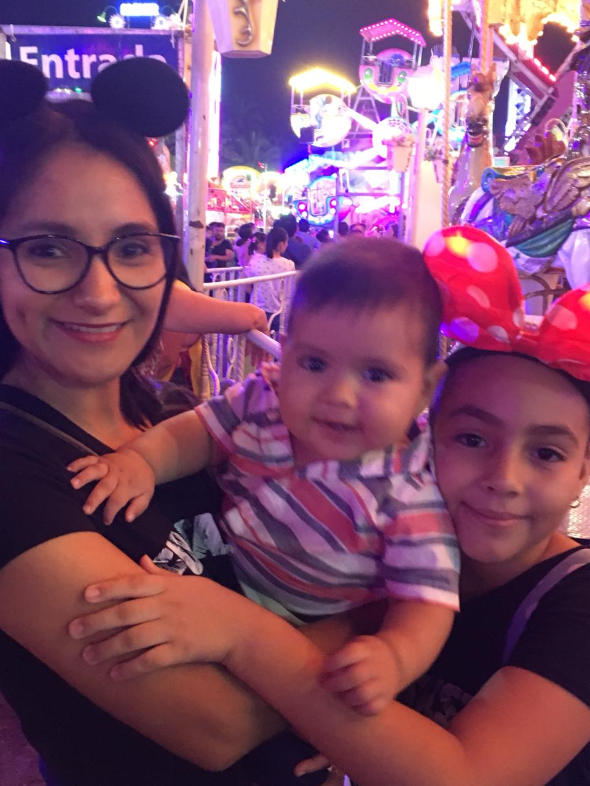
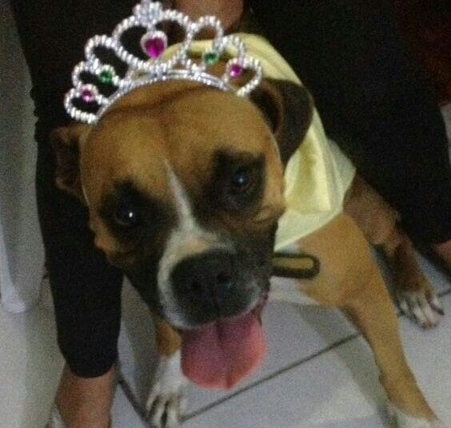
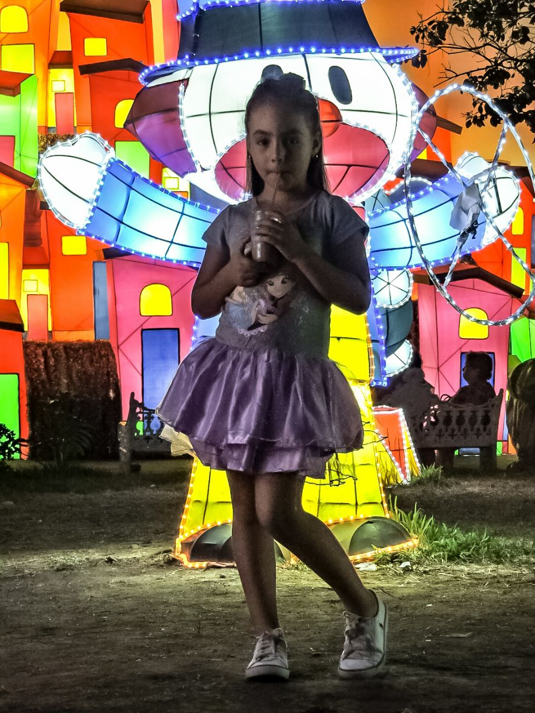
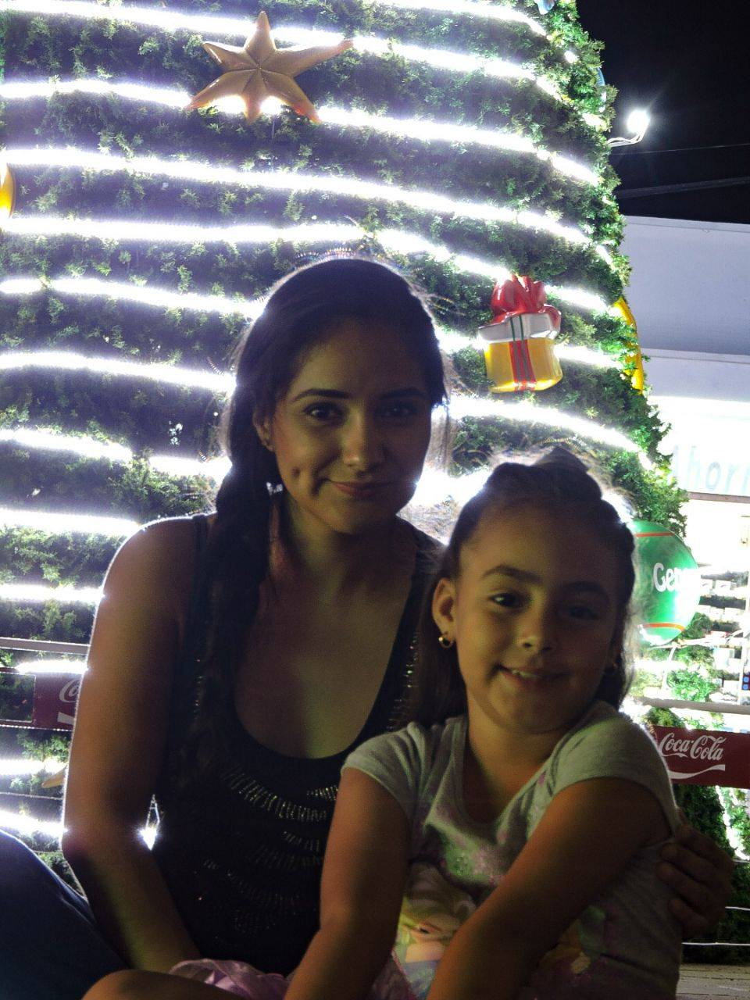
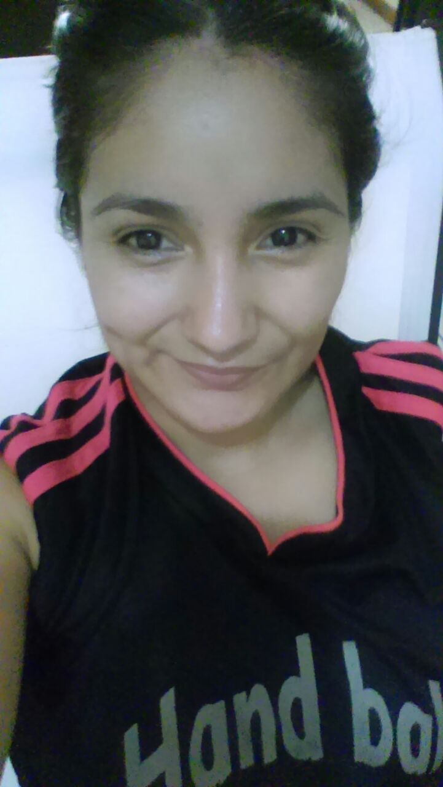

Perfil Personal y Profesional
Perfil Profesional
Mi aventura en lo laboral inicio al graduarme de la Facultad, en mi primer trabajo me invitaron a participar dentro de una empresa gobernamental en otro departamento, comencé proporcionando soporte remoto y en sitio para los kioskos digitales de los Gobiernos del Distrito Federal, Baja California Sur y Guanajuato. Pasando 2 años logré obtener una jefatura de operación, en dónde mi esfuerzo y trabajo dieron frutos. A mediados del 2019 decidí tomar otro reto laboral, ingresé a la empresa Surespot para proporcionar soporte y atención a kioskos en otros países. Trabajaba en turnos nocturnos y sólo 3 días a la semana; así que decidí seguir creciendo; cubrí una incapacidad en la embotelladora de Colima (Coca Cola) en dónde proporcionaba soporte remoto y en sitio a planta y oficinas; a todos sus empleados de Ciel, Altozano, Coca Cola y tiendas de convenecia Kioskos. Actualmente me encuentro muy emocionada aprendiendo muchas cosas nuevas como Padawan(aprendiz) de QA en Michelada.io que es una de las mejores empresas de desarrollo en México.
Hace muchos años que salí de la escuela, aquí un poco de los lugares en donde tuve la oportunidad de formarme como profesionista.
Educación
Perfil Personal
Nací en Colima, Colima hace casí 32 años pero mi genética parece triunfar y parezco de menos de 28 años (yo solo me doy porras), me encanta hacer ejercicio y los deportes de alto rendimiento, además disfruto mucho de la comida y de dormir. Ultimamente disfruto mucho de la vida y los momentos que nos ofrece.
Pasatiempos
- Juegos de Mesa
- Handball
- Crosfit
- Comer
- Dormir
Tengo una hija de 9 años, me gustan las mascotas por ahora tengo un boxer de 3 años que es un amor, adopté el hijo de mi hermana como mío; es muy listo y travieso pero es un amor. Me gusta pasar tiempo con mi hija y a ella le encantan los juegos de mesa. Nos gusta salir a conocer nuevos lugares para comer y probar la comida de todo tipo.
|  |  |  |
|  |

|
 |
Conocer Colima
También tengo una amigo (Migue) que se cree youtuber y nos invita a sus aventuras y a conocer el Estado de Colima. No, no salimos en los videos!!